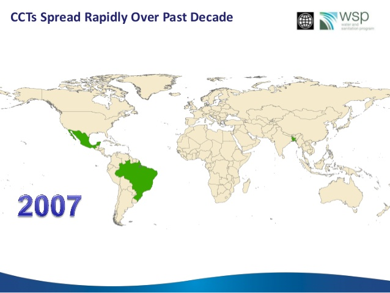

Capitulo 1 Introducción a la inferencia causal
Objetivos y mapa del capítulo
Al terminar este capítulo, el lector podrá:
- distinguir una pregunta causal de una descripción o una correlación;
- expresar una pregunta mediante tratamiento, resultado y población de interés;
- definir resultados potenciales y el contrafactual;
- explicar el problema fundamental de la inferencia causal;
- reconocer el sesgo de selección y los límites de comparaciones simples; y
- ubicar las principales estrategias de identificación que se desarrollan en el libro.
El recorrido parte de la motivación, pasa por la formulación de preguntas y el marco de resultados potenciales, y termina con las estrategias que permiten aproximar contrafactuales promedio creíbles.
Por qué importa la inferencia causal
En su breve y sugerente cuento Del rigor en la ciencia, Jorge Luis Borges relata la historia de un imperio en el que los cartógrafos llevaron su arte a un grado de perfección tal que construyeron un mapa a escala 1:1, tan extenso y detallado como el territorio que pretendía representar. Con el tiempo, ese mapa fue olvidado y sus ruinas se confundieron con las del imperio.
En aquel Imperio, el Arte de la Cartografía logró tal Perfección que el mapa de una sola Provincia ocupaba toda una Ciudad, y el mapa del Imperio, toda una Provincia. Con el tiempo, estos Mapas Desmesurados no satisficieron y los Colegios de Cartógrafos levantaron un Mapa del Imperio, que tenía el tamaño del Imperio y coincidía puntualmente con él. Menos Adictas al Estudio de la Cartografía, las Generaciones Siguientes entendieron que ese dilatado Mapa era Inútil y no sin Impiedad lo entregaron a las Inclemencias del Sol y los Inviernos. En los desiertos del Oeste perduran despedazadas Ruinas del Mapa, habitadas por Animales y por Mendigos; en todo el País no hay otra reliquia de las Disciplinas Geográficas. (Suárez Miranda, Viajes de Varones Prudentes, Libro Cuarto, Cap. XLV, Lérida, 1658.)
No podemos capturar toda la complejidad del mundo en un modelo, pero aspiramos a representarlo con suficiente precisión para entenderlo, intervenirlo y mejorarlo. La econometría aplicada moderna se concentra, por ello, en preguntas causales específicas. La teoría económica orienta qué relaciones estudiar y qué mecanismos considerar; los diseños empíricos permiten evaluar esas relaciones con datos.
Como explican Angrist y Pischke en Mostly Harmless Econometrics, la investigación empírica resulta especialmente valiosa cuando responde preguntas causales concretas pensando en el experimento que permitiría contestarlas. Cuando el experimento no existe, se buscan comparaciones controladas o variaciones cuasiexperimentales creíbles. La identificación —no la complejidad del estimador— es el núcleo del ejercicio.
Conocer efectos causales permite comprender mecanismos, predecir el impacto de intervenciones y aprender qué funciona, para quién y bajo qué condiciones. Por ejemplo, saber si aumentar la educación mejora los ingresos futuros o si una transferencia condicionada eleva la matrícula ofrece una base más sólida para diseñar y ajustar políticas públicas.
Microeconometría y política pública
Los aportes de la microeconometría aplicada pueden separarse en:
- Efectos directos:
- asignar recursos hacia intervenciones con mayor impacto por peso invertido;
- mejorar la calidad, eficiencia y efectividad de programas e instituciones;
- orientar la gestión hacia resultados, no solo hacia insumos y procesos;
- detectar efectos no previstos, positivos o negativos; y
- fortalecer la rendición de cuentas mediante evaluaciones transparentes.
- Efectos indirectos:
- alimentar el debate público con evidencia rigurosa;
- hacer explícitos y discutibles los supuestos de las decisiones; y
- promover la retroalimentación entre teoría, datos y política.
Microeconometría y teoría económica
La evidencia microeconométrica también permite contrastar modelos, descartar mecanismos irrelevantes, orientar nuevas hipótesis y diseñar experimentos que refinen la teoría económica.
Ejemplo: Progresa (México, 1997)
Uno de los programas más influyentes y mejor evaluados en América Latina es Progresa, posteriormente conocido como Oportunidades y luego Prospera. Lanzado en México en 1997, su diseño combinó evidencia empírica y principios de incentivos económicos.
Su objetivo fue reducir la pobreza y fortalecer el capital humano de hogares vulnerables, especialmente en áreas rurales. El programa ofreció:
- ingreso monetario de corto plazo;
- incentivos para invertir en educación y salud infantil; y
- transferencias condicionadas a la asistencia escolar y a visitas regulares a centros de salud.
Evaluaciones tempranas documentaron aumentos en escolaridad, mejoras en salud y una focalización efectiva hacia hogares pobres. Estas estimaciones ilustran cómo un diseño explícito de evaluación puede convertir una intervención pública en una oportunidad de aprendizaje.


Cómo formular una pregunta causal
Una investigación causal comienza por precisar la relación de interés: ¿cuál es el tratamiento o causa?, ¿cuál es el resultado?, ¿en qué población y horizonte temporal se quiere medir el efecto? Si esa relación no puede formularse de manera clara y concisa, todavía no hay una pregunta causal bien delimitada.
Los ejercicios descriptivos siguen siendo valiosos, pero responden preguntas distintas. Una asociación entre educación y salarios, por ejemplo, no revela por sí sola cuánto cambiaría el salario de una persona si recibiera un año adicional de educación.
Preguntas clásicas de la literatura incluyen:
- ¿Cómo afecta un año adicional de educación al salario?
- ¿Qué impacto tienen las instituciones democráticas sobre el desarrollo económico?
- ¿Los hogares pobres se benefician de la limpieza del medio ambiente?
- ¿Las leyes de control de armas reducen la violencia?
El experimento ideal
Imaginar el experimento ideal obliga a definir qué se asignaría, quién recibiría el tratamiento, qué resultado se mediría y qué comparación revelaría el efecto. Muchos experimentos son inviables o poco éticos, pero esta pregunta hipotética ayuda a precisar el estimando y a diagnosticar qué variación observacional podría aproximarlo.
Por ejemplo, para estudiar el efecto de comenzar la escuela a una edad más avanzada, podríamos imaginar asignar al azar el ingreso a primer grado a los seis o siete años y comparar resultados posteriores. El ejercicio revela una dificultad: empezar después cambia simultáneamente la edad y la duración acumulada de escolarización. Incluso el experimento imaginado debe definir con cuidado qué efecto se busca aislar.
Una buena pregunta también debe justificar su relevancia, explicar qué no ha resuelto la literatura e identificar los mecanismos o la teoría que motivan la hipótesis.
Checklist para una buena pregunta causal
| Pregunta | Descripción |
|---|---|
| ¿Cuál es la relación causal de interés? | Define con claridad qué variable actúa como causa y cuál como efecto. |
| ¿Puedes describir el experimento ideal? | Imagina cómo se asignaría el tratamiento y cómo medirías el impacto. |
| ¿Por qué esta pregunta es importante o interesante? | Justifica la relevancia empírica, social o política del tema. |
| ¿Qué aporta respecto a la literatura existente? | Identifica vacíos o limitaciones en estudios previos que tu trabajo busca superar. |
| ¿Qué mecanismos o teoría motivan la hipótesis causal? | Asegúrate de que haya una narrativa teórica detrás de la relación que estudias. |
Contrafactual y resultados potenciales
El contrafactual responde: ¿qué habría ocurrido con la misma unidad bajo la condición alternativa? Para formalizarlo, definimos \(D_i=1\) si la unidad \(i\) recibe el tratamiento y \(D_i=0\) si no lo recibe. Cada unidad tiene dos resultados potenciales:
- \(Y_i(D=1)\): resultado si recibe el tratamiento;
- \(Y_i(D=0)\): resultado si no lo recibe.
El efecto causal individual es \(\tau_i=Y_i(D=1)-Y_i(D=0)\).
Visualizando el contrafactual
Unidad tratada: observamos \(Y_i(D=1)\).

Para esa misma unidad, \(Y_i(D=0)\) es el resultado potencial no observado: su contrafactual. Una persona del grupo de control no es literalmente ese contrafactual individual. Bajo supuestos de comparabilidad —por ejemplo, asignación aleatoria— el promedio del grupo de control puede aproximar el contrafactual promedio del grupo tratado.
Ejemplo de heterogeneidad
Supongamos que el tratamiento es ir al hospital (\(D=1\)). \(Y_i(D=1)=1\) significa que la persona se recuperaría si fuera al hospital, mientras que \(Y_i(D=0)=1\) significa que se recuperaría sin ir. Los siguientes perfiles son resultados potenciales hipotéticos que ilustran heterogeneidad de efectos; no constituyen recomendaciones clínicas:
- Carolina: \(Y_i(D=0)=0\) y \(Y_i(D=1)=0\); no se recuperaría bajo ninguna condición.
- Camila: \(Y_i(D=0)=0\) y \(Y_i(D=1)=1\); se recuperaría únicamente si va al hospital.
- Mónica: \(Y_i(D=0)=1\) y \(Y_i(D=1)=0\); se recuperaría únicamente si no va al hospital.
El ejemplo muestra que los efectos individuales pueden diferir. En datos reales nunca observamos ambos resultados potenciales de una misma persona y, por tanto, no podemos clasificarla en uno de estos perfiles.
El problema fundamental
Nunca observamos simultáneamente \(Y_i(D=1)\) y \(Y_i(D=0)\) para una misma unidad. Solo observamos:
\[ Y_i = D_iY_i(D=1)+(1-D_i)Y_i(D=0) = \begin{cases} Y_i(D=0) & \text{si } D_i=0,\\ Y_i(D=1) & \text{si } D_i=1. \end{cases} \]
Este problema de datos faltantes impide calcular directamente el efecto individual y también el efecto promedio del tratamiento:
\[ ATE=\mathbb{E}[Y_i(D=1)-Y_i(D=0)]. \]
En un mundo ideal podríamos clonar cada unidad y observarla bajo ambas condiciones. Como no es posible, la inferencia causal construye comparaciones que recuperan efectos promedio bajo supuestos explícitos.
Ceteris paribus
Todos los demás factores permanecen constantes.
La comparación causal ideal cambia el tratamiento y mantiene constantes las demás causas del resultado. En datos observacionales, buscar una persona “parecida” no basta por sí solo: las unidades pueden diferir en características no observadas relevantes.
Diferencia observada y sesgo de selección
Una comparación frecuente es la diferencia de resultados promedio entre tratados y no tratados:
\[ \mathbb{E}[Y_i\mid D_i=1]-\mathbb{E}[Y_i\mid D_i=0]. \]
Al sumar y restar \(\mathbb{E}[Y_i(D=0)\mid D_i=1]\), obtenemos:
\[ \underbrace{\mathbb{E}[Y_i\mid D_i=1]-\mathbb{E}[Y_i\mid D_i=0]}_{\text{diferencia observada}} = \underbrace{\mathbb{E}[Y_i(D=1)-Y_i(D=0)\mid D_i=1]}_{\text{efecto causal sobre tratados}} + \underbrace{\mathbb{E}[Y_i(D=0)\mid D_i=1]-\mathbb{E}[Y_i(D=0)\mid D_i=0]}_{\text{sesgo de selección}}. \]
La diferencia observada equivale al efecto causal sobre los tratados más el sesgo de selección. Este último aparece cuando, aun sin tratamiento, tratados y controles habrían tenido resultados promedio distintos. Una muestra grande reduce la incertidumbre estadística, pero no elimina este sesgo. El capítulo Parámetros causales desarrolla la demostración y los estimandos con mayor detalle.
| Tratados | Controles |
|---|---|
Comparaciones que no identifican causalidad
Dos comparaciones descriptivas no identifican por sí solas un efecto causal:
- Tratados frente a no tratados: sin una estrategia de identificación, la diferencia puede combinar el efecto causal con selección previa.
- Después frente a antes: sin un grupo de comparación y un supuesto sobre la evolución contrafactual, el cambio puede combinar el tratamiento con tendencias, maduración u otros choques temporales.
Estas comparaciones no están “prohibidas”: son informativas como descripciones. Para interpretarlas causalmente se necesitan supuestos adicionales defendibles y un diseño que los haga plausibles.

.fuente[Fuente: @banrepcultural]
Estrategias del curso
El curso estudia diseños que buscan construir contrafactuales promedio creíbles:
- Experimentos aleatorizados: usan la asignación al azar para hacer comparables, en promedio, los grupos.
- Selección en observables: ajusta por características observadas mediante emparejamiento o ponderación.
- Datos de panel y diferencias en diferencias: comparan cambios entre grupos bajo un supuesto de tendencias paralelas.
- Variables instrumentales: aíslan variación exógena del tratamiento inducida por un instrumento válido.
- Regresión discontinua: explota reglas de asignación con un umbral conocido.
Cada estrategia identifica un parámetro causal bajo supuestos específicos. Ningún método reemplaza la formulación clara de la pregunta, el conocimiento institucional ni el análisis crítico de esos supuestos.
Mapa del libro y puente a Stata
| Familia | Fuente de comparación | Pregunta central |
|---|---|---|
| Experimentos | Asignación aleatoria | ¿El azar hizo comparables los grupos? |
| Selección en observables | Unidades comparables según covariables | ¿Se observaron todos los factores de selección relevantes? |
| Panel / DiD | Cambios entre grupos y periodos | ¿La tendencia contrafactual habría sido paralela? |
| Variables instrumentales | Variación inducida por un instrumento | ¿El instrumento es relevante y satisface la restricción de exclusión? |
| Regresión discontinua | Unidades cercanas a un umbral | ¿Es plausible la ausencia de ordenamiento preciso alrededor del umbral y son continuos los resultados potenciales? |
En la secuencia del libro, el próximo capítulo introduce Stata: importar y organizar datos, ejecutar comandos y reproducir los ejercicios. A continuación, el capítulo Parámetros causales formaliza los estimandos antes de desarrollar las familias de diseños.